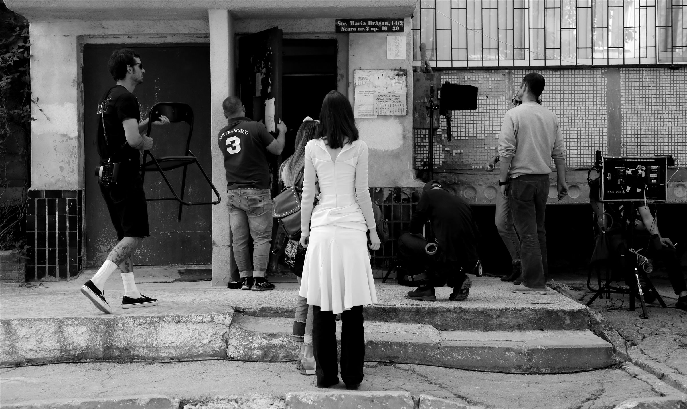
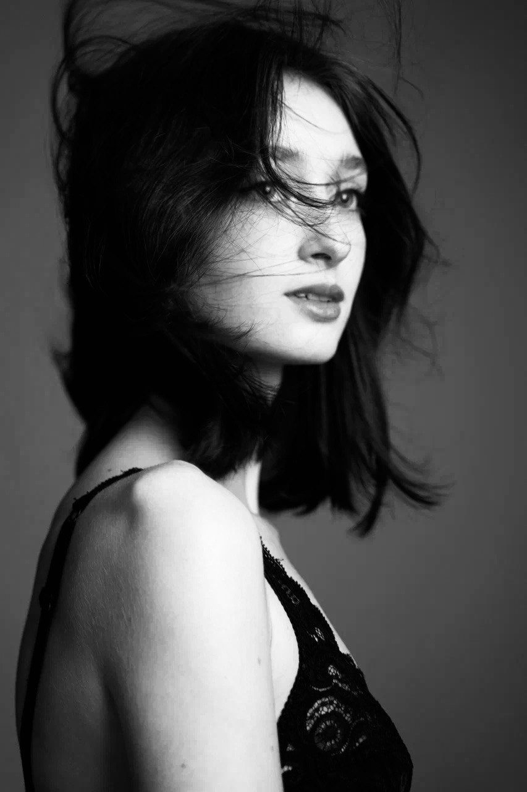
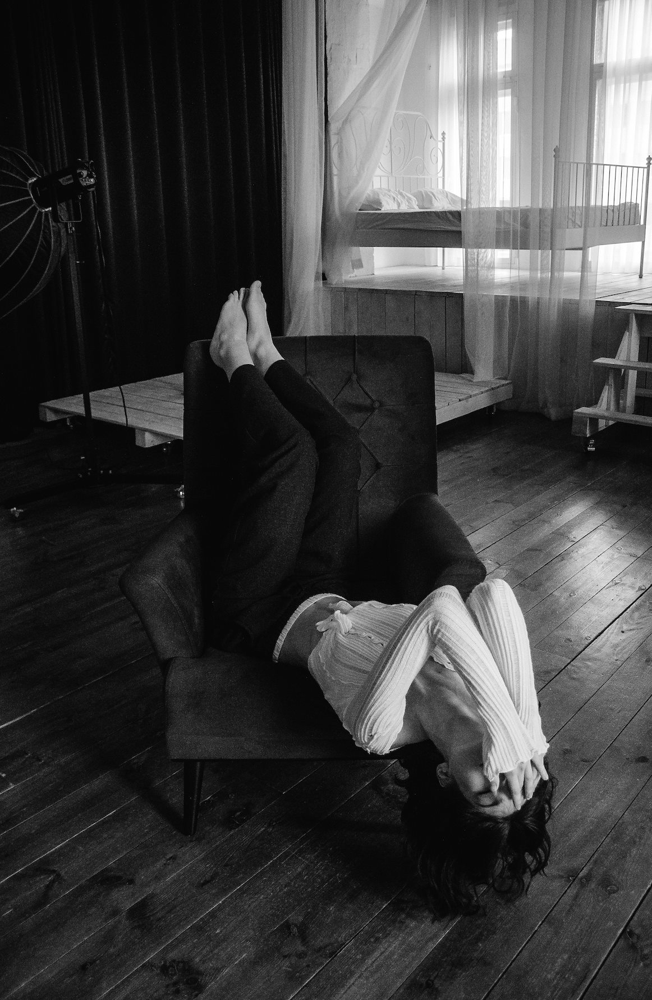

Portrait — Studio Editorial
About
A voice across stage, screen & lens
Arina Mura is a Moldovan actress, pianist, and model based in Chișinău.
She studies Classical Piano Performance at AMTAP and works across film, music, and fashion.
In 2026, she made her screen debut in Transit Times.

Appearance
Stats
Height
177 cm
Playing Age
18–25
Hair
Red
Eyes
Green
Nationality
Moldovan
Based in
Chișinău, Moldova
Languages
Fluency
Russian
100%
Romanian
90%
English
60%
Skills
Skills
- Acting
- Classical Piano
- Modeling
- Stage Performance
- Improvisation
- Dance
- Swimming
- Public Speaking
Filmography
Film
Transit Times (2026)
RoleEva
DirectorAna-Felicia Scutelnicu
FestivalMunich International Film Festival


Modeling
Editorial & Runway
Gallery
Moments
Get in touch
Let's work together
Arina Mura
Actress · Pianist · Model